Let 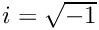 and 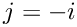. A quaternary sequence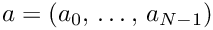 of length 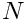 has entries from the set 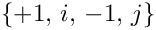.
The periodic autocorrelations of a quaternary sequence 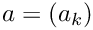 of length are defined by
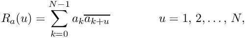
where the index 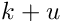 is calculated modulo .
A quaternary Legendre pair is a pair 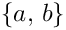 of length sequences such that
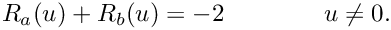
For a quaternary Legendre pair , it may always be assumed that 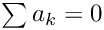 and 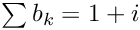.
A quaternary Legendre pair is restricted if we demand the periodic autocorrelations be real-valued. The pair is strongly restricted if we further demand one of the sequences has entries only in .
Quaternary Legendre pairs were first introduced by Kotsireas and Winterhof (2024).
Code
A quaternary sequence is represented by the corresponding string 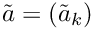 where 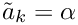 if 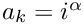.
Consideration was restricted to those quaternary sequences that have real-valued periodic autocorrelations. As such, the periodic autocorrelations are invariant under the natural action of the dihedral group 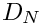 of order 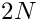, that is, it suffices to enumerate bracelets. Moreover, since we are assuming the sum of sequence elements is fixed, the bracelets have fixed content. If we do not demand the correlations to be real-valued, then we may only consider the natural action of the cyclic group 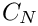 of order and so enuemrate fixed content necklaces.
Since we may assume , we consider the action of 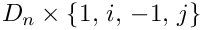 in this case. For the remaining sequence, we are assuming so that we can reduce the search only by the action of in this case.
To enumerate the fixed content bracelets, the fixed content bracelet procedure developed by Karim et al. (2013) was used. The reader may find their source code here. The code found in the source file bracelets.c is essentially a straighforward augmentation of the code developed by Karim et al. where the functionalities to calculate and test for real-valued periodic autocorrelations, square norms of nonprincipal character sums, etc., were added.
The fixed content necklace procedure of Sawada (2003) was also augmented by the same functionalities as those provided for the fixed content bracelet proceedure of Karim et al. (2013) in bracelets.c. The original source code of Sawada can be found here.
Data
The various results of the searches are stored in var/. Each length has its own subdirectory. The pairs are stored in addition to their autocorrelation vectors.
References
Karim, S., J. Sawada, Z. Alamgir, and S. M. Husnine. "Generating Bracelets With
Fixed Content." Theoret. Comput. Sci. 145 (2013): 103-112, doi:10.1016/j.tcs.2012.11.024.
Kotsireas, I.S. and A. Winterhof. "Quaternary Legendre Pairs," in New Advances in Designs, Codes and Cryptography, eds. C. J. Colbourn and J. H. Dinitz, 289-304. Switzerland: Spring Nature, 2024.
Sawada, J. "A Fast Algorithm to Generate Necklaces with Fixed Content." Theoret. Comput. Sci. 301, no. 1-3 (2003): 477-489, doi:10.1016/S0304-3975(03)00049-5.